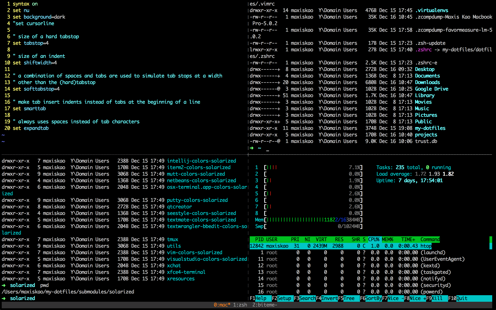

class: center, middle Work Report =========== ## Maxis Kao ## #### 2014.12.16 #### --- ## Say Hi - 高定慧 - Kao, Ting-Hui - Maxis --- ## Reach me - maxiskao - \#2661 --- ## Settle Down  --- ## Set up Web Search FE Development Environment * OpenStack * `yinst`, `yroot` * ssh-key * github